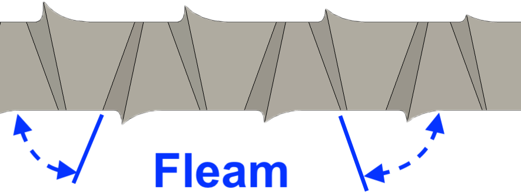

|
|
|
Hand Saws |

Side View |

End View |
|
|

Top View |
||
|
||
In The Handyman’s Handbook, Paul N. Hasluck states,
A saw in thoroughly good order is so sharpened that each tooth does a share, and no one tooth more than the others.
Handsaws are sharpened using a number of tools.
|
Required
|
Optional (wooden jigs can be made)
|
|
Current day approach
|
Historical approach
|
|
General Guidelines |
||||||
|---|---|---|---|---|---|---|
|
Saw Type |
Saw Purpose |
Rake
|
Fleam |
Drop |
Set
|
Comments |
| Backsaw | Crosscut | -15° | 20° | 0° | 25% |
Drop: Older texts recommended a drop of 5°. |
| Rip | -10° | 0° | 0° | 25% |
Drop: Older texts recommended a drop of 10°. |
|
| Hybrid | -10° | 0° | 10° | 25% |
This hybrid approach works well with hard woods. |
|
| Compass Saws | (all) | -5° | 0° | 0° | 25% | |
| Hand Saw |
Crosscut
|
-15° | 25° | 0° | 25% |
Rake: Higher rake angles make the saw's cutting more aggressive (and faster). For soft, fibrous woods, consider rake = 45° and increase Set. Fleam: With fleam at 10°, a crosscut saw acts more like a modified rip saw. At 45°, it requires more resharpening and is less tolerant of variable grain alignment. For soft, fibrous woods, consider fleam = 30°. In older texts, fleam = drop, and it is common to see both at 10°. |
|
Rip
|
-5° | 0° | 0° | 25% |
Rake: For general, all-around use, set to -5°. Higher rake angles make the saw's cutting more aggressive (and faster). Fleam: For dense wood with wild grain, increase to 10°. Drop: Older texts recommended a drop of 10°. |
|
| Pocket Knife Saw Blades | (all) | -30° | 30° | 0° | 25% |
There is no set with these saw blades. As with pole pruner saw blades, a feather-edge file is needed to sharpen this saw blade due to the acute angles between this saw's teeth. |
| Pole Pruner Saw Blades | (all) | 0° | 20° | 0° | 25% |

Feather-Edge File When sharpening these saws, a typical, 60° triangular file cannot be used as the angle between the teeth is in the 35°-40° range. Instead, a feather-edge file is needed. These files are quite thin and are able to fit into the small space between this saw's teeth. |
| Pocket Knife Saw Blades | (all) | 0° | 8° | 0° | 25% | |
| Veneer Saws | (all) | 0° | 0° | 0° | 0% | Use a stone to de-burr, and then bevel the sides of the teeth. |
Notes:
➀ When a saw is to be used for sawing wet planks, especially for crosscutting, consider increasing the kerf by increasing the Set. Also consider setting the Rake angle higher to help clear the sawdust. (These same recommendations do not apply to dried wood.)
➁ Set is expressed as a percentage of the saw blade's thickness, before de-burring the teeth.

Another View of Filing Angles

Triangular File Used vs. Saw TPI
Image courtesy Tools for Working Wood
In The Handyman’s Handbook, Paul N. Hasluck states,
There are always several teeth at the heel and at the point that do little work; those in the middle portion do most, and consequently wear away faster. All saws ... have a consistent tendency to get hollow, and this must be prevented; and the only way to prevent it is to file teeth down by passing a partly worn file along the edges until it touches every tooth.
When jointing the tops of the teeth, a saw jointer makes this easier. However, you could also use one of the jigs in the recommended books below. Engler's and Lie-Nielson's books show this best.
When setting the teeth, a saw set is critical.
If buying one, get one with a pistol-grip, and which accommodates 4-16 TPI. The saw set I use is a Stanley model 42W. It works much better than the models 42 or 432. I have not tried the Stanley model 42S nor the model 42X, nor any of those newer ones available on eBay, so I cannot speak to their abilities.
Only set the top 1/2 of the teeth.
Increase Set for saws with coarse teeth. Decrease Set for saws with finer teeth.
For very fine saws, the burr from the filing may give an adequate set. If it does not, you may need to have a second saw set where you have filed down the width of the hammer. This is expecially the case for saws with 15 points per inch or more. Matt Cianci's book, Set & File, shows good pictures of this.
Note: a number of older texts such as The Handyman’s Handbook by Paul N. Hasluck note that the saw’s teeth should be set after filing them. The standard approach today is to set the teeth before filing them.
When filing the teeth, the saw must be held solidly along a straight edge. The goals are to
A saw vice like the Gramercy Tools 14" Saw Vise is very good for this, but it can also be made from wood (e.g., a 2x4).
There are jigs in the recommended books below. Engler's and Lie-Nielson's books show the options best.
|
|
For the triangular file, use the specified size based on the saw's teeth per inch (TPI) as shown in the lower picture to the right.
De-burring the teeth is also known as dressing the teeth, or stoning the teeth.
Again, to quote Paul N. Hasluck from The Handyman’s Handbook,
After a file has been sharpened, it should be carefully laid flat on its side and the teeth rubbed down with a whetstone or smooth file to remove any feather edge that may be left by the file in sharpening. This gives a larger and better cutting edge to the saw. If the points only of the teeth are allowed to do the work, the action is a scratching and not a cutting one.
When de-burring the teeth, be sure to use a hard stone or file to even out the amount of set and create a consistent cutting by the saw.
Once the blade has been sharpened, it should be tested on a typical piece of wood, preferrably the type used by the woodworker.
The Handyman’s Handbook by Paul N. Hasluck offers instruction on repairing a number of issues which may be seen:
I will not try to restate what he has outlined, the book does a great job.
Aaron Keim wrote a great article for Fine Woodworkng about reshaping a blocky panel-saw handle, adding a touch of chip carving, and refinishing it for another lifetime of use.
French veneer saws have a variable rake towards the center, and only have a bevel on one side. Best to have a professional re-sharpen these.

Pole Pruner
with Saw Blade
Saw blades on pole pruners also need to be sharpened to work as expected. The saw blade is sharpened following the instructions for a crosscut hand saw.
Lee Valley sells three tools / jigs which are worth investigating:
Blackburn Tools' web page, Saw Tooth Geometry, has good visuals to explain Drop (which they call, Slope), Fleam, and Rake.
Matt's book is one of the first I've seen which not only explains the process well, but also shows the necessary activities in well-done pictures.
If you are only going to get one book for sharpening hand saws, get this one.
|
|
Other recommended books and papers are listed below alphabetically, not by preference.
|
|